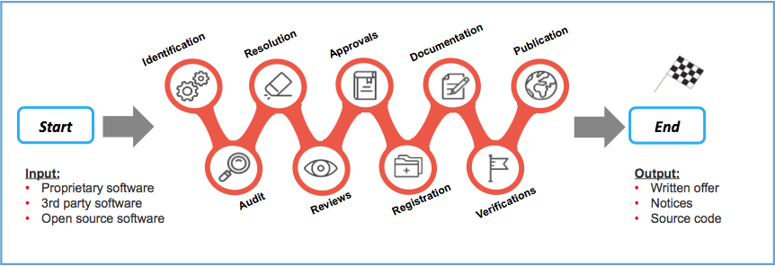
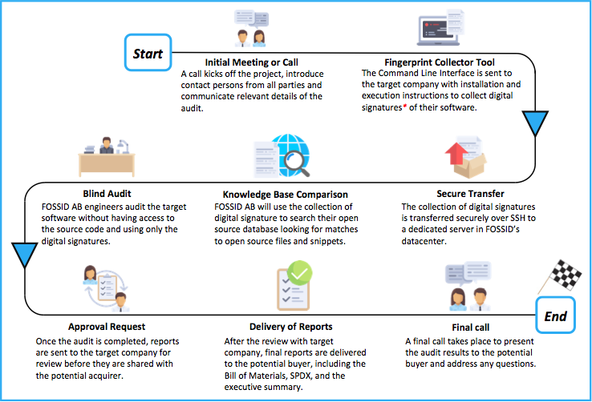
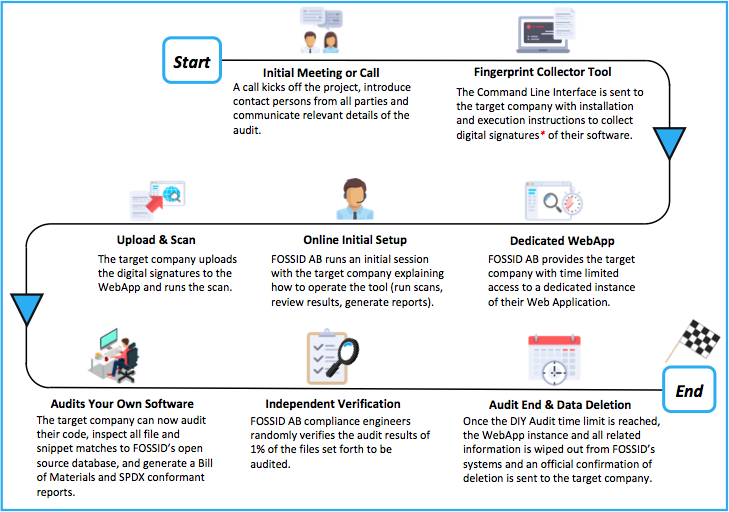

A Contribution to the OpenChain Project
A Contribution to the OpenChain Project
Ibrahim Haddad, Ph.D.
Introduction
We live in an era defined by software. Nearly everything we do on a daily basis is in some way planned, shaped, analyzed and managed by software. Under that large software umbrella, open source software is king. Companies across all industries are racing to use, participate in, and contribute to open source projects for the various advantages they offer, from the ability to leverage external engineering resources that accelerate time to market, to enabling faster innovation, and gaining additional capacity to focus on differentiating value.
Marc Andreessen’s saying that “software is eating the world” also applies to corporate transactions, as almost any acquisition will involve software in some form regardless of whether the target company is a technology company. The software due diligence exercise, in which the acquirer performs a comprehensive review of the target company’s software and its compliance practices, is a standard part of any merger or acquisition transaction. This exercise often uncovers open source software, which presents different verification challenges than proprietary software.
This open source merger and acquisition (M&A) assessment checklist is intended as a tool to help evaluate the open source practices of an organization as part of the due diligence process. The use of the checklist calls for a frank appraisal of the open source program’s strengths and weaknesses. The checklist presents a set of recommended practices distilled from the experiences of organizations committed to encouraging the use of open source while fully complying with license obligations, in addition to contributing to open source projects while following company policies and processes.
Not every organization will see a need to implement every practice and some will find alternative practices or implementation approaches to achieve the goals of a compliance program and more broadly an open source program office. Appropriately, an organization will adapt its compliance approach based upon the nature and amount of the open source it uses, the licenses that apply to open source it uses, the kinds of products it distributes, and the design of the product itself.
Evaluation Categories
The checklist explores 13 specific areas to evaluate:
Discovery of open source software in code bases
Review and approval of open source use
Satisfaction of open source license obligations
Overseeing community contribution to open source projects
Process adherence audits
Open source policy
Appropriate staffing for compliance execution
Adaptation of business processes to accommodate open source specific > requirements
Training
Verification practices
Compliance process management
Maintaining inventory of open source software
Automation and tool support for large scale use, consumption, and > compliance
The remainder of this paper is dedicated to exploring these 13 different categories and various elements within each category.

1. Discovery of Open Source Software
“Discovery” concerns itself with identifying the third party software, including open source software in a code base readied for release as a product or a service.
Open source software discovery occurs at an early point in the > product development cycle.
The product team systematically identifies all the software and > additional materials that must be subjected to compliance > analysis.
Third party suppliers disclose all open source software in their > deliverables.
The organization has a defined format for the disclosure.
The open source compliance team reviews the disclosure for > accuracy and completeness using whatever tools are available > to it.
The organization investigates the third party supplier’s use of open > source software and its open source compliance practices as part > of its supplier selection process.
The organization investigates the third party supplier’s > compliance and supply chain management practices to evaluate > their adequacy.
The organization uses defined guidelines to determine if > automated scanning or other confirmation of the supplier’s > disclosure is needed.
Software license agreements include appropriate terms and > conditions concerning open source software.
Procurement (i.e., Supply Chain) staff and others who interface > with suppliers have been trained in open source software > matters and include open source software concerns in their > discussions with third party suppliers.
The organization periodically conducts audits of open source > software use.
At an agreed-upon frequency, the organization conducts an > audit/inventory of open source software used internally and > records its findings.
The organization audits and inventories the open source software > included in its products and services.
The organization identifies the conditions or events that > trigger a fresh audit of the product’s source code or of the > incremental changes to a code base whose open source > compliance had previously been verified.
A bill of materials is prepared to reflect the open source content > of a specific product or service release.
Code scans are used to prepare the bill of materials wherever > source code is available.
Supplier disclosures are used in cases where source code is not > available.
The organization uses a systematic approach to identify changes in > the code baseline and to perform incremental compliance on changes > in an efficient manner.
The organization systematically achieves closure on issues arising > from discovery activity.
The organization systematically tracks open issues.
The organization assigns adequate resources to achieve closure > in a reasonable timeframe.
The organization periodically reviews commercial and open source > tools to assess the costs and benefits of their use in discovering > open source software in code baselines.
2. Review and Approval of the Use of Open Source Software

“Review and Approval” evaluates the planned use of open source software in products for distribution and, if mandated by company policy, in internal projects.
The organization subjects all open source software used in products > to review and defines what contextual changes in open source > software use trigger re-approval activity.
The organization considers issues relevant to the use of a specific > open source software package and version, such as bug fixes the > community has made in subsequent versions, security > vulnerabilities that have been identified in a specific package > version, technology incorporated into the package that might be > subject to export control regulations, etc.
An open source review board (OSRB) is used to review and approve > planned uses of open source software in products or services.
The OSRB is staffed with appropriately skilled and knowledgeable > individuals.
Appropriate resources are available for the interpretation of > open source licenses and definition of obligations to be > satisfied.
Sufficient staffing is provided to the OSRB to achieve > turnaround time on submissions that supports product > development cycles.
OSRB procedures (inputs to a review, participants, review > procedures, analysis procedures, decision outcomes, appeal and > waiver procedures, etc.) are defined and documented.
The OSRB considers and provides architectural guidelines and/or > requirements for OSS inclusion in products to be distributed.
The OSRB uses independent analysis methods to confirm the open > source software content reported by teams when they submit an > open source software use case for approval.
Records of OSRB deliberations are maintained (cases, status, > past decisions, requirements imposed on product teams, etc.) > and used in future deliberations.
The OSRB decides whether to approve the proposed open source > software use and identifies obligations that must be > satisfied, if any, and conditions that must be met, if any, > before product distribution is approved.
The organization provides a definition and examples of the > information that must be submitted to the OSRB for approval of > open source software use.
- Proposed use of open source software includes a description of > the architectural interfaces and dependencies between any open > source components and the rest of the system.
The OSRB communicates perspectives across business units to achieve > a consistency of interpretation of license obligations and review > practices.
3. Obligation Satisfaction
“Obligation Satisfaction” covers compliance practices needed to satisfy the obligations of open source licenses.
The organization verifies that its third party suppliers provide all information that is necessary to satisfy open source license obligations when the product is distributed or service made available, such as copyright notices and attributions, license text, corresponding source code that must be made available, etc.
The organization defines what modes of external software conveyance trigger license obligations and assures that any software thus released meets compliance requirements.
The organization satisfies obligations in a consistent and disciplined manner.
The organization makes available a repository of license texts and obligation requirements to assure consistent interpretation and compliance activities.
The organization provides explicit examples of ways to satisfy obligations.
Skilled and knowledgeable individuals write the open source relevant sections of product documentation and satisfy the other license requirements.
The organization places the complete source code into a software repository corresponding exactly to each open source software package used in a given product release.
Teams provide, as required by specific licenses, the complete source code, which may include any associated interface definition files, plus the scripts used to control compilation and installation of the executable.
Verification activities are used to assure that corresponding source code for the open source software can be built outside the organization’s build environment and that the resultant binaries for the open source packages match the product binaries.
Verification activities assure that any inappropriate comments have been removed from source code destined for publication.
Verification activities assure that all open source software packages to be distributed have been approved by the OSRB.
Source code reviews are used during the development phase to assure that open source software packages contain necessary and appropriate documentation of copyright, attribution, licensing, and change log information.
Activities to assess and satisfy open source license obligations are planned and integrated into project schedules to assure that obligations are met in time for product release.
A defined code distribution mechanism is used to respond to routine requests for source code distribution.
The organization defines a code distribution mechanism that satisfies the requirements of particular open source licenses.
A web portal or other face to the community is created to provide online access to source code used in company products and services.
Responsibility for operating the portal is assigned and staffed appropriately.
Procedures are established to assure that correct and complete versions of open source software are posted.
The portal is organized in a clear and meaningful way to provide users easy access to products’ licensing information and, if appropriate, source code.
Individuals or teams responsible for documentation and localization activities perform necessary tasks to assure that obligations are met.
Support teams (e.g., supply chain, documentation, IT) are trained in open source fundamentals.
Involvement of support functions is planned, scheduled, and performed in a timely manner.
The organization responds to all external compliance requests in a timely manner.
A compliance fulfillment process exists for satisfying routine requests.
Metrics are routinely collected and reported on response time.
A compliance inquiry response process exists.
Response actions are given high priority and issues are escalated to an appropriate level of management.
Appropriate oversight, review, and approval of compliance actions is provided.
Modifications to the organization’s defined compliance process are made as appropriate to prevent recurrence of compliance issues.
Compliance requests are tracked to closure.
If determined to be necessary, efforts to re-write copyrighted code as proprietary software under cleanroom conditions are carried out according to a defined procedure.
4. Community Contributions

“Community Contributions” involve the review and approval of employee contributions to open source projects, as well as company contributions of code and other resources to community projects.
Community contributions are reviewed and approved according to a defined process.
A determination is made whether an employee’s proposed contribution is work-related or non-work-related based upon an existing guideline.
- The consequent scope of review and approval authority is determined.
A process is used to determine whether any of the organization’s departments or business units object to the proposed contribution.
Copyright ownership of the planned contribution is clarified.
A process is used to initiate and plan company contributions of financial support, labor, code, or other intellectual property to community projects.
Company contributions to open source communities are tracked (e.g. both individual contributions such as bug fixes as well as company- sponsored projects).
A process is used to review and decide on “Contributor License Agreements”.
5. Policy
The “Policy” category addresses corporate policy to encourage the use of open source software while also protecting the company’s business interests.
A policy is set in place to enable the company to incorporate and use open source software in their products and services.
The policy is championed by a senior executive and is communicated to the entire company.
The policy addresses roles and responsibilities for compliance actions, a review and approval process for use of open source software, guidelines for contributions to community projects and a review and approval process for contributions, and core processes that must be implemented to govern use of open source software in company products and services.
The management team endorses the policy and assures that all employees involved with open source understand and follow the policy.
6. Compliance Staffing

The “Compliance Staffing” category focuses on the skilled resources needed to implement the open source compliance program.
Skilled and knowledgeable individuals are made available to contribute to the compliance effort.
Dedicated assignments to the compliance function provide continuity of involvement and accumulation of expertise.
Job descriptions identify the skills and insights needed to perform compliance functions adequately.
The organization identifies individuals with the skills, insights, and interest needed to contribute to the compliance function.
Compliance contributors are drawn from cross-functional departments, as needed.
Training and experiential learning opportunities are provided to build necessary skillsets.
- Individuals performing compliance functions in different business units are encouraged to communicate and share expertise and perspectives to achieve a consistent compliance approach.
External consultants are hired, as needed, to augment the internal compliance effort.
Estimates are prepared of total compliance effort and duration needed to fulfill the organization’s compliance requirements.
Estimates of one-time and overhead activities are estimated and tracked.
Estimates of product-related compliance activities are estimated and tracked from the perspective of both the organizational compliance team and the product team.
A staffing plan is prepared and followed to provide a level of responsiveness and cycle time adequate for product release cycles.
Progress is tracked against the organization’s and product team’s compliance plans and additional resources are added as needed to achieve compliance objectives.
7. Adaptation of Business Processes

“Adaptation of Business Processes” focuses on fitting OSS compliance practices within the context of existing business processes.
Existing business processes are modified to incorporate open source compliance activities and considerations.
Compliance activities are mapped against the organization’s product development process to identify leverage points.
A process FMEA (failure mode effects analysis) is performed to identify ways that compliance failures could occur and the business processes that should be modified to prevent such failures.
Supply chain’s supplier selection procedures are tailored to ensure that open source compliance requirements are considered when performing due diligence on suppliers.
Process management ensures that open source compliance activities are included early enough in the product development cycle to enable the organization to meet its release timelines.
Late-cycle verification steps are used to ensure that all compliance requirements have been met before external distribution occurs.
Individuals charged with managing business processes have received training in open source compliance requirements and exhibit sufficient understanding and experience with open source compliance concerns.
8. Training

“Training” addresses the communications needed to ensure that the entire company understands the actions that must be taken to achieve open source compliance.
Basic training on the organization’s open source policies, processes and guidelines is provided to all who come into contact with open source software or are involved in customer and supplier interactions and in product distribution activities.
The organization defines who must take training.
Training records are maintained.
Training objectives are set.
Follow-up actions are taken to assure planned training has been completed.
Open source training is integrated into the organization’s training curriculum and is made part of organizational and personal objectives.
Open source training is provided as part of new hire orientation.
Additional training on open source related topics is provided to augment the basic curriculum for both managers and non-managers. Examples include organizational procedures, tools, open source licenses, software architectural guidelines, etc.
Growth of an internal community of open source users and contributors is encouraged in order to provide organizational guidance and leadership with respect to the use of open source software in an ethical and compliant way.
Refresher training on open source compliance is provided periodically.
9. Compliance Process Management
“Compliance Process Management” focuses on establishing, maintaining, and improving the process of achieving open source compliance.
Responsibility for achieving organization-wide open source compliance is clearly designated.
The designated compliance officer has access to the organization’s senior executives to escalate compliance issues whenever needed.
The compliance support team has access to functional specialties to guide or perform compliance activities, such as OSRB, documentation production, IT, etc.
An individual or team is designated as the organization’s point of contact to the external OSS community for compliance-related communications.
An individual is established as a point of contact for employees to voice their concerns or questions.
The team responsible for coordinating compliance activities has visibility into product development and product release plans and activities and is able to interface effectively with product teams.
Project management fundamentals are applied to managing compliance projects and compliance team activities.
Compliance goals and objectives are set.
Compliance project priorities are set.
Compliance effort is estimated.
Compliance resources are assigned.
Compliance projects are planned and scheduled, progress is tracked, and issues are escalated as needed.
Metrics are defined and collected to assess the effectiveness of the organization’s open source use and its open source compliance activities.
Corrective actions are taken to address process inadequacies.
A process improvement plan is established for the compliance process.
The organization engages in externally focused benchmarking activities to identify potential improvements to its compliance process.
The organization maintains an awareness of community initiatives to address supply chain issues with respect to open source compliance.
10. Open Source Software Inventory
“Open Source Software Inventory” addresses the organization’s need to maintain accurate records of open source software content and compliance activities to support responses to compliance inquiries and changes in the compliance environment.
The organization tracks progress of compliance activities for a product being readied for release.
The organization tracks progress of the open source software discovery process and of scans and audits on the product’s code.
The organization systematically tracks closure of open source issues identified during the discovery process.
The organization tracks progress of the review and approval process for open source software cases.
The organization tracks progress of obligation satisfaction for a product being readied for release.
The organization maintains complete and accurate records about the open source content in its products and services, and the context in which it is used, according to a defined procedure.
A defined format is used to record information about the open source software included.
The OSRB maintains accurate records about its reviews and review outcomes, including any limitations or conditions on approval that might necessitate a different outcome in another context.
The organization uses past records of open source software review and approval as an aid when reviewing new open source software cases for approval.
The organization maintains complete and accurate records about open source software used internally for tools, operational systems, prototype development, etc.
- The organization reviews records of open source software internal use periodically to identify opportunities to save money, improve performance, and achieve operational synergies.
11. Automation and Tool Support

“Automation and Tool Support” examines the organization’s use and consideration of tools to support its compliance activities.
The organization assesses its compliance process to identify and prioritize opportunities for automation and tool support.
The organization regularly investigates commercial and open source tools that might provide assistance to compliance activities.
A systematic approach to tool evaluation is taken.
Tool requirements are documented.
A tool evaluation plan is established and executed.
Use cases and pilot projects are defined.
Evaluation licenses are acquired or other mechanisms for experimenting with tools are used.
Tool acquisition or tool development projects are planned and executed according to defined procedures for tool development and adoption.
The organization engages in user group meetings and community forums related to compliance tools.
Approved methods are used to determine the open source software content of a product/service release and the files that must be subjected to compliance analysis.
Tools are used to track open source issues to closure.
Approved methods are used to determine the differences in software content between individual releases of a product for distribution.
An initial compliance baseline for a product is established with the aid of scanning tools, whenever it is advantageous to do so.
A repository of open source software packages is maintained and made available to the organization.
12. Verification

“Verification” concerns the independent assurance steps taken by the OSS compliance team to confirm that OSS obligations have been properly met.
The compliance team performs verification activities according to a defined procedure.
The compliance team verifies that source code license obligations have been met by the time a product is considered ready for release.
The compliance team verifies that any offers of source code have been included as required.
The compliance team verifies that source code is placed in a distribution staging area for each OSS package included in a product readied for release and that a satisfactory distribution mechanism exists for any source code that must be made available.
The compliance team verifies that source code to be made available corresponds exactly to the binaries in the product.
The compliance team verifies that source code can be built outside the organization’s build environment.
The compliance team verifies that copyright notices, attribution notices, license text, and any modification logs have been included accurately.
The compliance team verifies that OSRB approval has been obtained for all open source software packages in the release.
The compliance team verifies that third party suppliers have made full and accurate disclosure of open source included in their deliverables and that these suppliers have satisfied their obligations under the open source licenses.
The compliance team verifies that open source can be obtained via the defined distribution mechanism and that the source code thus obtained can be built in an independent environment.
13. Process Adherence Audits

“Process Adherence Audits” refer to the checks the organization performs to determine whether it is using its defined compliance process and obtaining expected results from its use.
Process adherence audits are used to determine whether the organization follows its defined compliance process.
- Audits identify the instances in which non-standard reviews were used.
Audits assess the extent to which execution of the compliance process produces expected compliance results.
Audits determine whether the organization maintains accurate records about the open source software content of its products and services, and of the compliance activities it performs.
Preparing for an Audit - Acquisition Target
Passing an open source compliance audit is not hard if you’re prepared. However, it is very unlikely to go well if you begin preparing only when an acquirer shows interest. These activities are meant to be integrated into your daily business and development activities. The objective of these activities is to ensure the company tracks all open source components and respects open source license obligations resulting from your use of these open source components. The same measures can be of great help if your company becomes a target for a corporate transaction, as it minimizes the risk of surprises.
Know what’s in your code
Knowing what’s in your code is the golden rule of compliance. You must maintain a complete software inventory for all software components including their origin and license information. This covers software components created by your organization, open source components, and components originating from third parties. The most important point is having a process for identifying and tracking open source components. You don’t always need a complex compliance program; however, you should have five basic elements: policy, process, staff, training, and tools.
Policy and process
The open source compliance policy is a set of rules that govern the management of open source software (both use of and contribution to). Processes are detailed specifications as to how a company will implement these rules on a daily basis. Compliance policies and processes govern various aspects of using, contributing, auditing, and distribution of open source software.

Figure 1: Detailed view of a sample open source compliance process
Figure 1 illustrates a sample compliance process, with the various steps each software component will go through as part of the due diligence as you build your product or software stack.
Identify all incoming source code.
Audit source code.
Resolve any issues uncovered by the audit.
Complete appropriate reviews.
Receive approval to use open source.
Register open source in the software inventory.
Update product documentation to reflect open source usage.
Perform verification to all steps previous to distribution.
Distribute source code and perform final verifications in relation > to distribution.
The output of the process is an open source bill of materials (BoM) that you can publish, along with a written offer and various copyright, license and attributions notices fulfilling the legal obligations of the components in your BoM. For a detailed discussion on the open source compliance process, please download the free ebook Open Source Compliance in the Enterprise (2nd edition), published by the Linux Foundation.
Staff
In large enterprises, the open source compliance team is a cross-disciplinary group consisting of various individuals tasked with the mission of ensuring open source compliance. The core team, often called the Open Source Review Board (OSRB), consists of representatives from engineering and product teams, legal counsel, and a compliance officer. The extended team consists of various individuals across multiple departments that contribute on an ongoing basis to the compliance efforts: Documentation, Supply Chain, Corporate Development, IT, and Localization. However, in smaller companies or startups, this can be as simple as an engineering manager supported with a legal counsel. Every company is different.
Training
Education is an essential building block in a compliance program, to help ensure that employees possess a good understanding of policies governing the use of open source software. The goal of providing open source and compliance training is to raise awareness of open source policies and strategies and to build a common understanding of the issues and facts of open source licensing. It should also cover the business and legal risks of incorporating open source software in products and/or software portfolios. Both formal and informal training methods can be used. Formal methods include instructor-led training courses where employees have to pass a knowledge exam to pass the course. Informal methods include webinars, brown bag seminars, and presentations to new hires as part of the new employee orientation session.
Tooling
Open source compliance teams often use tools to automate source code audits, to discover of open source code, and to identify its licenses. Such tools include a compliance project management tool, software inventory tool, and source code and license identification tools.
Be in compliance
If you have shipped products containing open source software, intentionally or not, then you must comply with the various licenses governing those software components. Hence the importance of knowing what’s in your code, as a complete bill of materials makes compliance much easier.
Being in compliance is not a simple task, and it varies from product to product based upon the licenses and the structure of the code. At a high level, being in compliance means that you:
Track all use of open source software.
Compile a finalized open source BoM for all software in the shipping image of product.
Fulfill the obligations of the open source licenses.
Repeat the process every time you issue a software update.
Respond quickly and seriously to compliance inquiries.
Use latest releases for security purposes
One of the benefits of a comprehensive compliance program is that it’s easier to find products with insecure versions of open source components and replace them. Most source code scanning tools now provide functionality to flag security vulnerabilities disclosed in older software components.
An important consideration when upgrading an open source component is to always ensure that the component retains the same license as the previous version. Open source projects have occasionally changed licenses on major releases. To avoid a situation where you are using a version with security vulnerabilities, companies are encouraged to engage with open source project communities. It is not reasonable or feasible to be active in all of the open source projects you use, therefore a certain level of prioritization is needed to identify the most critical components. There are various levels of engagement, ranging from joining mailing lists and participating in the technical discussions, to contributing bug fixes and small features, to major contributions. At minimum, corporate developers working on a specific open source project should subscribe to and monitor relevant mailing lists for any reports related to security vulnerabilities and available fixes.
Measure up your compliance efforts
The easiest and most effective first step for organizations of all sizes is to engage with the OpenChain Project and to obtain “OpenChain Conformant” status. This is done by filling out a series of questions either online or manually. The questions used for OpenChain Conformance help confirm that an organization has created processes or policies for open source software compliance. OpenChain is an industry standard, similar to ISO 9001. It is focused on the “big picture,” with precise processes and policy implementations up to each individual organization. OpenChain Conformance shows that open source compliance processes or policies exist, and that further details can be shared when requested by a supplier or customer. OpenChain is designed to build trust between organizations across the global supply chain.
Preparing for an Audit - Acquiring Company
For the acquiring company, certain actions and decisions must be made before the audit is commissioned, and other actions must be considered after you receive the results.
Choose the right audit method
As discussed in Open Source Audits in Merger and Acquisitions Transactions, three primary audit methods can be used. Acquiring organizations need to decide which audit method is most suited to their specific needs (and their target company), given the parameters they are working with. The three audit methods are: traditional, blind, and the Do-It-Yourself (DIY). We provide a brief description of each of them in the following subsections.
Traditional Audit Model
I refer to this method as traditional, because it is the original method of source code scanning for open source compliance purposes. Traditional audits are those where a compliance auditor from a third-party auditing company gets access to the source remotely via a cloud system or physically while visiting on site and performs the source code scan.

Figure 2: Illustration of the traditional audit method in M&A transactions
Figure 2 illustrates the traditional audit method. Please note that the process may vary slightly from one service provider to another. A typical traditional audit process follows these steps:
Auditor sends questions to the acquirer to have a better understanding of the job.
Acquirer responds to the questions thereby allowing auditor company to have a better understanding of the scope and audit parameters.
Auditor provides quote based upon the responses.
Agreement is reached on the quote. Next is signing the service agreement, statement of work, non-disclosure agreement, etc.
Auditor is granted access to the target’s code via secure cloud upload, or through a visit to the company for an on-site audit.
Auditor scans the target’s source code, cleans up the false positives, and evaluates the results.
Auditor generates the report and delivers it to the client.
A call or a face-to-face meeting follows to review the results with the auditor and address any questions.
This method is common across most audit service providers. It allows the opportunity to collect multiple bids for the same audit job and the ability to choose the best bid given your requirements. Following this model, the target company must be willing to transfer the code to the auditors or allow them to visit their offices to complete the job on-site.
Blind Audit Model
The blind audit method was pioneered by FOSSID AB, a Stockholm based company, to address the confidentiality requirements of M&A transactions. (Here, FOSSID AB refers to the company and FOSSID refers to the tool itself.)

Figure 3: Illustration of the blind audit method
Using their proprietary technology, FOSSID AB have the ability to perform audits and generate reports without looking at the source code. Figure 3 illustrates the blind audit process used by FOSSID AB and designed to provide confidentiality of source code in M&A transactions. One major advantage of a blind audit includes the ability for the auditor to complete the review without having access to the source code. Additionally, with sufficient precautions by the acquirer, the auditor may also not gain awareness of the target’s identity offering a high level of confidentiality. As far as I am aware, such an audit method is not offered by any other
company offering open source compliance services.
DIY Audit
The Do-It-Yourself audit provides the acquirer or the target company time-limited access to the open source compliance cloud tools, enabling them to run the scan themselves. They can then perform the audits internally with complete access to the knowledge base and all reporting facilities. This is an approach that is particularly interesting for companies that have in-house employees with sufficient experience to interpret scan results and suggest remediation procedures. It can quickly become more cost-effective for companies that go through the M&A process several times per year. An independent certification can be performed to verify the findings, to further secure the integrity of the audit.

Figure 4: Illustration of the DIY audit method
Figure 4 provides an illustration of the DIY audit method using the tools from FOSSID AB. This approach has several advantages such as the ability to start the audit as soon as needed because it uses internal resources and not dependent on the availability of third party auditors, potentially shortening the timelines and reducing an external source of cost. Any compliance problem can be addressed immediately, because it is being conducted by the people who have direct access to the code. Finally, the audit can be verified by the provider of the audit tool to ensure correctness and completeness.
Know what you care about
The report from the source code audit may provide a significant amount of information, depending on the complexity of the scanned code. It is important to identify which licenses and use-cases are critical and focus on those.
Ask the right questions (and use this checklist)
The open source audit report offers a lot of information about the target’s source code and the licenses involved. However, many other data points will require further investigation to get clarification or confirmation on compliance related concerns. In this section, we offer a collection of questions as a starting point to frame what is important to you, and help you determine what questions you should address with the target company.
Has the target used code with licenses that could jeopardize the IP of the target or acquirer?
Are there any code snippets with unknown origin and/or unknown license?
Are the target’s open source compliance practices sufficiently mature and comprehensive?
Does the target company track known vulnerabilities in their open source components?
When distributing products, does the target provide all necessary materials to satisfy open source license obligations (written offer, various required notices, and source code when applicable)?
Does the target company’s compliance process aligned with the speed of development to meet product release schedules?
Does the target have a process in place to respond to all internal and external requests for source code in a timely manner?
Identify items to be resolved before executing the transaction
In some cases, an open source audit may reveal instances of licenses or compliance practices that are not acceptable to the acquirer. The acquirer can then request these instances to be mitigated as a condition for closing. For instance, the target company may use a code component that comes license under “License A”, but the acquiring company has a strict policy against using any source code licensed under “License A”. In such a situation, both parties will need to discuss and figure out a possible solution.
Create a compliance improvement plan for post-acquisition
This is especially important when the acquirer is a large company buying a smaller startup that will continue to operate as a subsidiary. In this scenario, the acquirer often helps the target company establish a formal compliance policy and process, as well as provide training on their own practices, and offer ongoing guidance and support.
Recommended compliance-related development practices
Several papers have been written with detailed recommendations for establishing development practices that support open source license compliance activities. In this section, we will briefly highlight the most important practices that when followed, will eliminate the majority of common compliance issues encountered when working with open source software.
Recommended practices
Request approval to use open source software before you commit the code into the product repository.
Request approval before you link proprietary code to an open source library or vice versa, unless the license of the library code is already pre-approved by company policy.
Update the changelog for every file you modify to reflect the date of change, the author, and a short one-line description of the change applied.
Document the interfaces between any code you are writing and open source software, as it helps others understand the interactions and clarify compliance concerns.
Save the web page describing a source code package’s license as a PDF, to document the state of the project when you downloaded it.
Save an unaltered copy of the package in a backup location, along with the license information.
When upgrading an open source software component, verify if the license is still the same. License changes can occur between versions.
Verify that the license in the source code package matches what is described on the project web site. In the event of discrepancy, contact the project for clarification.
Avoid common mistakes
Do not remove or disturb existing licensing or copyright information. All such information must remain intact.
Do not rename open source components.
Do not copy/paste open source code into proprietary or third party source code (or vice versa) without prior approval.
Do not commit open source or third party source code into an internal product source tree without prior approval.
Do not merge or mix source code incoming under different licenses without proper approval.
Do not discuss compliance practices with individuals outside of your company.
Conclusion
Open source due diligence is generally one task in a long list of tasks that need to be successfully completed in an M&A transaction. However, it is still an important aspect of the general due diligence exercise given the central role of software and potential IP risks. While the open source due diligence may seem a lengthy process, it often can be completed quickly, especially if both parties are prepared, and working with a swift compliance service provider.
How can you be prepared?
If you are the target, you can maintain proper open source compliance practices by ensuring your development and business processes include:
Identifying the origin and license of all internal and external > software.
Tracking open source software within the development process (components and snippets).
Performing source code reviews for new or updated code entering the build.
Fulfilling license obligations when a product ships or when software is updated.
Offering open source compliance training to employees.
If you are the acquirer, you should know what to look for and have the skills on-hand to address issues quickly:
Decide with the target company on the appropriate audit method to use, and which third party to engage for the audit. Note that some companies don’t have ability to do blind testing, some do not support the DIY, and others do not have the ability to discover code snippets.
If possible, get multiple bids for the audit and learn more about your audit service providers. It’s not just about the cost, but also about obtaining the precise output that will help you address any concerns you may have. Make sure you have the internal expertise to compare each bid equally, and that they include all audit parameters such as:
Audit method, inputs and outputs
Primary contact persons at target and acquirer for speedy discussions of issues that arise
Timeline and logistics especially if it involves an on-site visit
Confidentiality parameters
Code vulnerabilities and version control analysis
Cost, normal process and expedited
Open source compliance is an ongoing process, not a destination. Maintaining good open source compliance practices enables companies to be prepared for any scenario where software changes hands, from a possible acquisition, a sale, or product or service release. For this reason, companies are highly encouraged to invest in building and improving upon their open source compliance programs.
Appendix A - Evaluation Worksheets
Worksheet - Discovery of Open Source Software
| Practice | Implementation | Notes, Action Items |
|---|---|---|
| Discovery of open source software occurs early in the product development cycle. |
|
|
| A systematic approach is implemented to identify all the software subjected to the compliance analysis. |
|
|
| Third party suppliers disclose all open source software in their deliverables. |
|
|
| The organization periodically conducts audits of open source software use. |
|
|
| A bill of materials is prepared to reflect the open source content for all products/services. |
|
|
| A systematic approach is implemented to identify changes in the code and to perform incremental compliance in an efficient manner. |
|
|
| A systematic approach is implemented to resolve issues arising from discovery activity. |
|
|
| Period reviews are in place to evaluate tools used in discovering open source software in source code. |
|
Worksheet - Review and Approval of the Usage of Open Source Software
| Practice | Implementation | Notes, Action Items |
|---|---|---|
| The organization subjects all open source use in products to review and defines what contextual changes in open source software use trigger re-approval activity. |
|
|
| The organization considers issues relevant to the use of a specific open source software package and version. |
|
|
| An open source review board is used to review and approve planned uses of open source software in products or services. |
|
|
| The organization provides a definition and examples of the information that must be submitted to the OSRB for approval of open source software use. |
|
|
| The OSRB communicates perspectives across business units to achieve a consistency of interpretation of license obligations and review practices. |
|
Worksheet - Obligation Satisfaction
| Practice | Implementation | Notes, Action Items |
|---|---|---|
| The organization verifies that its third party suppliers provide all necessary information to satisfy open source license obligations |
|
|
| The organization defines what modes of external software conveyance trigger license obligations and assures that any software thus released meets compliance requirements. |
|
|
| The organization satisfies obligations in a consistent and disciplined manner. |
|
|
| The organization places into a software repository the complete source code corresponding exactly to each open source software package used in a given product release. |
|
|
| Source code reviews are used during the development phase to assure that open source software packages contain necessary and appropriate documentation of copyright, attribution, licensing, and change log information. |
|
|
| The organization places into a software repository the complete source code corresponding exactly to each open source software package used in a given product release |
|
|
| Source code reviews are used during the development phase to assure that open source software packages contain necessary and appropriate documentation of copyright, attribution, licensing, and change log information. |
|
|
| Activities to assess and satisfy open source license obligations are planned and integrated into project schedules to assure that obligations are met in time for product release. |
|
|
| A defined code distribution mechanism is used to respond to routine requests for source code distribution. |
|
|
| Individuals or teams responsible for documentation and localization activities perform necessary tasks to assure that obligations are met |
|
|
| The organization responds to all external compliance requests in a timely manner. |
|
Worksheet - Community Contributions
| Practice | Implementation | Notes, Action Items |
|---|---|---|
| Community contributions are reviewed and approved according to a defined process. |
|
|
| A determination is made whether an employee’s proposed contribution is work-related or non-work-related based upon an existing guideline. |
|
|
| A mechanism is used to determine whether any of the organization’s departments or business units object to the proposed contribution. |
|
|
| Copyright ownership of the planned contribution is clarified. |
|
|
| A mechanism is used to initiate and plan company contributions of financial support, labor, code, or other intellectual property to community projects. |
|
|
| Company contributions to open source communities are tracked. |
|
|
| A mechanism is used to review and decide on “Contributor License Agreements”. |
|
Worksheet - Policy
| Practice | Implementation | Notes, Action Items |
|---|---|---|
| A policy is set in place to enable the company to incorporate and use open source software in their products and services. |
|
|
| The policy is championed by a senior executive and is communicated to the entire company. |
|
|
| The policy addresses roles and responsibilities for compliance actions, a review and approval process for use of open source software, guidelines for contributions to community projects and a review and approval process for contributions, and core processes that must be implemented to govern use of open source software in company products and services. |
|
|
| The management team endorses the policy and assures that all employees involved with open source understand and follow the policy. |
|
Worksheet - Compliance Staffing
| Practice | Implementation | Notes, Action Items |
|---|---|---|
| Skilled and knowledgeable individuals are made available to contribute to the compliance effort. |
|
|
| Dedicated assignments to the compliance function provide continuity of involvement and accumulation of expertise. |
|
|
| Job descriptions identify the skills and insights needed to perform compliance functions adequately. |
|
|
| The organization identifies individuals with the skills, insights, and interest needed to contribute to the compliance function. |
|
|
| Compliance contributors are drawn from cross-functional departments, as needed. |
|
|
| Training and experiential learning opportunities are provided to build necessary skillsets. |
|
|
| External consultants are hired, as needed, to augment the internal compliance effort. |
|
|
| Estimates of total compliance effort and duration are prepared to address the organization’s compliance requirements. |
|
|
| Estimates of product-related compliance activities are estimated and tracked from the perspective of both the organizational compliance team and the product team. |
|
|
| A staffing plan is prepared and followed to provide a level of responsiveness and cycle time adequate for product release cycles. |
|
|
| Progress is tracked against the organization’s and product team’s compliance plans and additional resources are added as needed to achieve compliance objectives. |
|
Worksheet - Adaptation of Business Processes
| Practice | Implementation | Notes, Action Items |
|---|---|---|
| Existing business processes are modified to incorporate open source compliance activities and considerations. |
|
|
| Supply Chain’s supplier selection procedures are tailored to assure that open source compliance requirements are considered when performing due diligence on suppliers. |
|
|
| Process management assures that open source compliance activities are included early enough in the product development cycle to enable the organization to meet its release timelines. |
|
|
| Late-cycle verification steps are used to assure that all compliance requirements have been met before external distribution occurs. |
|
|
| Individuals managing business processes have received training in open source compliance requirements and exhibit sensitivity to open source compliance concerns. |
|
Worksheet - Training
| Practice | Implementation | Notes, Action Items |
|---|---|---|
| Training on the organization’s open source policies, processes and guidelines is provided to all who come into contact with open source software. |
|
|
| Growth of an internal community of open source users and contributors is encouraged in order to provide organizational guidance and leadership with respect to the use of open source software in an ethical and compliant way. |
|
|
| Refresher training on open source compliance is provided periodically. |
|
Worksheet - Compliance Process Management
| Practice | Implementation | Notes, Action Items |
|---|---|---|
| Responsibility for achieving organization-wide open source compliance is clearly designated. |
|
|
| The team responsible for coordinating compliance activities has visibility into product development and product release plans and activities, and is able to interface effectively with product teams. |
|
|
| Project management fundamentals are applied to managing compliance projects and compliance team activities. |
|
|
| Metrics are defined and collected to assess the effectiveness of the organization’s open source use and its open source compliance activities. |
|
|
| The organization engages in externally-focused benchmarking activities to identify potential improvements to its compliance process. |
|
|
| The organization maintains an awareness of community initiatives to address supply chain issues with respect to open source compliance. |
|
Worksheet - Open Source Software Inventory
| Practice | Implementation | Notes, Action Items |
|---|---|---|
| The organization tracks progress of compliance activities for a product being readied for release. |
|
|
| The organization maintains complete and accurate records about the open source content in its products and services, and the context in which it is used, according to a defined procedure. |
|
|
| The organization maintains complete and accurate records about open source software used internally for tools, operational systems, prototype development, etc. |
|
Worksheet - Automation and Tool Support
| Practice | Implementation | Notes, Action Items |
|---|---|---|
| The organization assesses its compliance process to identify and prioritize opportunities for automation and tool support. |
|
|
| The organization regularly investigates commercial and open source tools that might provide assistance to compliance activities. |
|
|
| Tool acquisition or tool development projects are planned and executed according to defined procedures for tool development and adoption. |
|
|
| The organization engages in user group meetings and community forums related to compliance tools. |
|
|
| Mechanisms are used to determine the open source software content of a product/service release and the files that must be subjected to compliance analysis. |
|
|
| Tools are used to track open source issues to closure. |
|
|
| Mechanisms are used to determine the differences in software content between individual releases of a product for distribution. |
|
|
| An initial compliance baseline for a product is established with the aid of scanning tools, whenever it is advantageous to do so. |
|
|
| A repository of open source software packages is maintained and made available to the organization. |
|
Worksheet - Verification
| Practice | Implementation | Notes, Action Items |
|---|---|---|
| The compliance team performs verification activities according to a defined procedure. |
|
|
| The compliance team verifies that source code license obligations have been met by the time a product is considered ready for release. |
|
|
| The compliance team verifies that copyright notices, attribution notices, license text, and any modification logs have been included accurately. |
|
|
| The compliance team verifies that OSRB approval has been obtained for all open source software packages in the release. |
|
|
| The compliance team verifies that third party suppliers have made full and accurate disclosure of open source included in their deliverables and that these suppliers have satisfied their obligations under the open source licenses. |
|
|
| The compliance team verifies that open source can be obtained via the defined distribution mechanism and that the source code thus obtained can be built in an independent environment. |
|
Worksheet - Process Adherence Audits
| Practice | Implementation | Notes, Action Items |
|---|---|---|
| Process adherence audits are used to determine whether the organization follows its defined compliance process. |
|
|
| Audit assess the extent to which execution of the compliance process produces expected compliance results. |
|
|
| Audits determine whether the organization maintains accurate records about the open source software content of its products and services, and of the compliance activities it performs |
|
Resources
Open Source Compliance in the Enterprise (2nd Edition)
Published by The Linux Foundation, Open Source Compliance in the Enterprise is a practical guide for enterprises on how to best use open source in products and services, and participate in open source communities in a legal and responsible way.
Open Source Audits in Merger and Acquisition Transactions
Published by The Linux Foundation, this ebook provides an overview and practical guide to open source audits in merger and acquisition transactions, and offers basic guidelines to improve open source compliance preparedness.
Practical GPL Compliance
Published by The Linux Foundation, Practical GPL Compliance is a compliance guide for startups, small businesses, and engineers, particularly focused on complying with the versions of the GNU General Public License (GPL). Its goal is to provide practical information to quickly address common issues.
OpenChain Curriculum
The OpenChain Curriculum is designed to help organizations meet the training and process requirements of the OpenChain Specification. It can also be used for general open source training and – because of its public domain licensing – can be partially or fully re-used for internal or external purposes without limitation.
Compliance Basics for Developers
A free open source compliance course from the Linux Foundation targeted for developers.
Software Package Data Exchange (SPDX)
SPDX is a set of standard format for communicating the components, licenses and copyrights of software packages.
Commercial Providers* of Software Composition Analysis Solutions
Black Duck Software (Synopsys)
FOSSA
nexB
Protecode (Synopsys)
Open Source Compliance Tools*
FOSSology is an open > source license compliance software system and toolkit.
Binary Analysis Tool > is an open source tool that assist in compliance activities. It > examines binary code looking for compliance issues.
QMSTR (pronounced quartermaster) > creates an integrated open source toolchain that implements > industry best practices of license compliance management.
Tern is an > inspection tool to find the metadata of the packages installed in > a container image.
SPDX tools provide > translation, comparison, and verification functionality.
* The author apologizes in advance if these list are missing any provider or tool. If so, please contact the author with the desired updates.
Open Source in M&A Transactions
A presentation by Oskar Swirtun and Ibrahim Haddad at the Linux Foundation’s Open Compliance Summit 2017.
Feedback and Future Revisions
Suggestions for improvement will be appreciated, in addition to feedback on the manner in which organizations are using the checklist. Please send comments to the author directly.
Acknowledgments
Icons used in this paper are made by Freepik from Flaticon and licensed under the Creative Commons BY 3.0.
About the Author
Ibrahim Haddad (Ph.D.) is the Executive Director of the Deep Learning Foundation that supports and sustains open source innovation in artificial intelligence, machine learning, and deep learning. He previously served as Vice President of R&D and Head of the Open Source Division at Samsung Electronics. At Samsung, he established the global open source division, set and executed Samsung's open source strategy, launched internal and external R&D collaboration projects, supported M&A and corporate VC activities, and represented Samsung in various foundations and consortia. Throughout his career, Haddad has held several technology and portfolio management roles at Ericsson Research, the Open Source Development Lab, Motorola, Palm, Hewlett-Packard and The Linux Foundation. Haddad graduated with Honors from Concordia University (Montréal, Canada) with a Ph.D. in Computer Science, where he was awarded the J. W. McConnell Memorial Graduate Fellowship and the Concordia University 25th Anniversary Fellowship.
Twitter: @IbrahimAtLinux
Web: IbrahimAtLinux.com
LinkedIn: linkedin.com/in/ibrahimhaddad